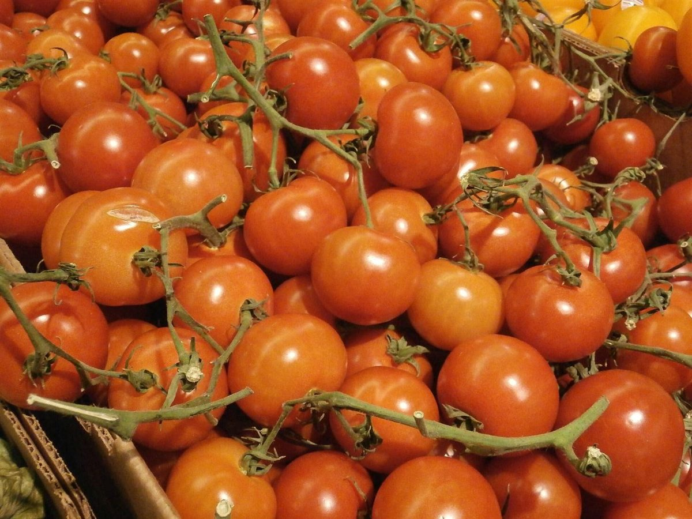

七竈

制作側の連想
七つの色で、実から豆まで。
「七竈(ななかまど)」は、秋に赤い実をつける木として一般に知られています。この木の名前や色づきは、お店の由来・理念とは無関係で、店名の由来も分かりません。制作側は、赤い実と珈琲豆の色の移り変わりを連想し、このサイトを「七段階の色見本」として組み立てました。制作側の連想であり、お店の考えとは関係がありません。
- 1若緑青い実の頃
- 2黄色づき始め
- 3橙日に透ける
- 4朱赤の入口
- 5紅熟れきった赤
- 6焦茶豆の茶色
- 7墨深い色の底
色別の引き出し(イメージ)
色ごとに、並べてみました。
写真はお店や登別市のものではありません。色のイメージで選んだ、国外・撮影地不明のフリー素材です。
緑


赤



茶


冬のほう
葉が落ちたあとの、白と灰。
霜


ご案内
お店のこと(確認できたものだけ)
| 所在地 | 北海道登別市登別温泉町21-21 |
|---|---|
| 電話 | なし |
| 営業時間 | 準備中 |
| 定休日 | 準備中 |
| ご予約 | 準備中 |
| 駐車場 | 準備中 |
| SNS | Instagram @nanakamado_cafe |